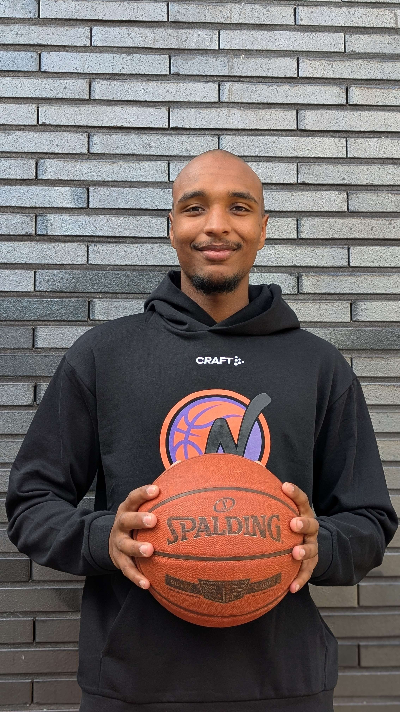

Nach langer Verletzungspause ist Noah Soumah zurück auf dem Court. Für die NBC Baskets Nordhorn ist das eine Nachricht, die sportlich wie menschlich richtig gut tut.
Rückschlag in der Landesliga-Saison
2025, während der Landesliga-Saison, riss sich Soumah das Kreuzband. Besonders bitter: Der damals erst 18-Jährige befand sich zu diesem Zeitpunkt in einer Phase, in der er sich immer besser an die Härte des Seniorenbereichs gewöhnte und mit starken Leistungen auf sich aufmerksam machte.
Der Ausfall traf die Mannschaft sportlich und menschlich hart. In der vergangenen Saison musste Soumah deshalb pausieren und sich Schritt für Schritt zurückarbeiten.
Wieder voll belastbar
Umso größer ist die Freude, dass Soumah nun wieder zu 100 Prozent einsatzfähig ist. Die Vorbereitung bei den NBC Baskets läuft bereits seit einigen Wochen und Noah kann jede Einheit vollständig absolvieren.
Dabei zeigt er eindrucksvoll, wie wichtig er mit seiner Größe, Athletik und Präsenz für die Mannschaft ist. Rechtzeitig zum Start des neuen Projekts steht er wieder voll zur Verfügung und kann gemeinsam mit dem Team die nächsten Schritte gehen.
Mehr Verantwortung beim NBC
Auch abseits des Spielfelds übernimmt Soumah Verantwortung. Als Trainer unserer U18 gibt er seine Erfahrung an den Nachwuchs weiter. In der 1. Herren wird er trotz seines jungen Alters zudem als Co-Kapitän eine wichtige Führungsrolle übernehmen.
Olliges freut sich über die Rückkehr
Trainer Patrick Olliges sagt: „Ich bin sehr froh, dass Soumah wieder fit ist und die harte Zeit überstanden hat. Er wirkt körperlich in einer sehr guten Verfassung, ist extrem fokussiert und wird der Mannschaft mit seiner Qualität enorm weiterhelfen. Wir freuen uns alle, ihn endlich wieder auf dem Court zu sehen.“
Willkommen zurück!
Die NBC Baskets freuen sich sehr, dass Noah Soumah wieder fit ist und die Zukunft in Nordhorn mitgestaltet.